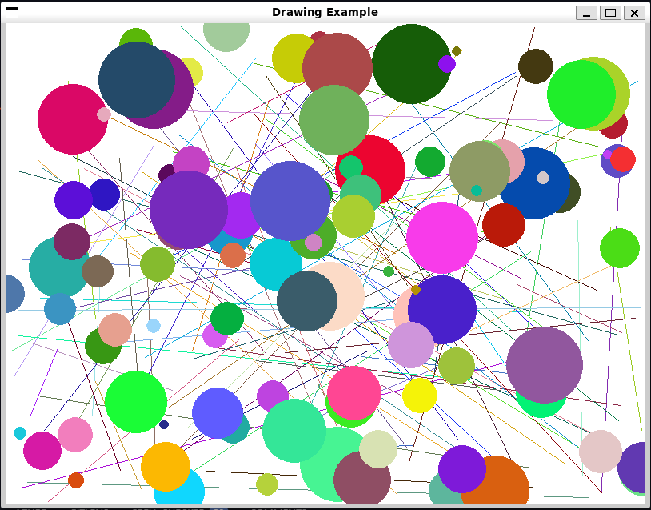
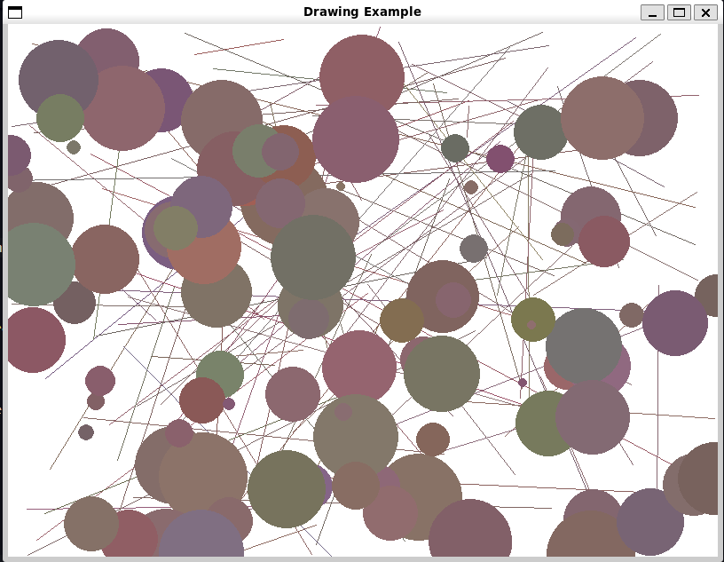
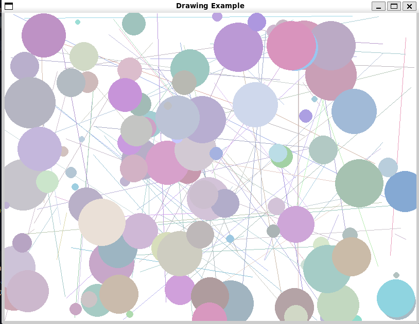
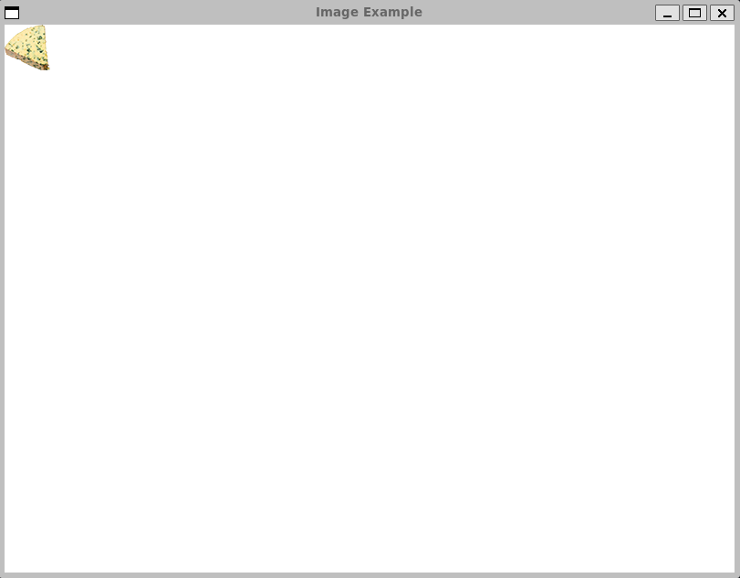
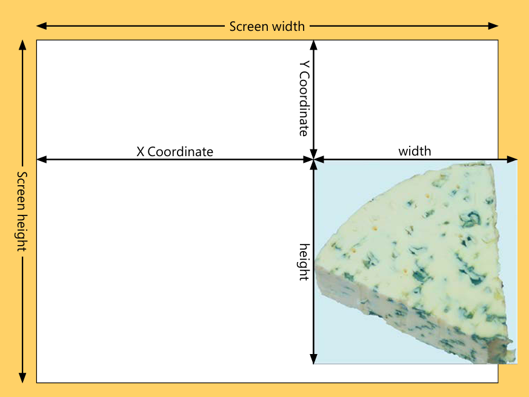
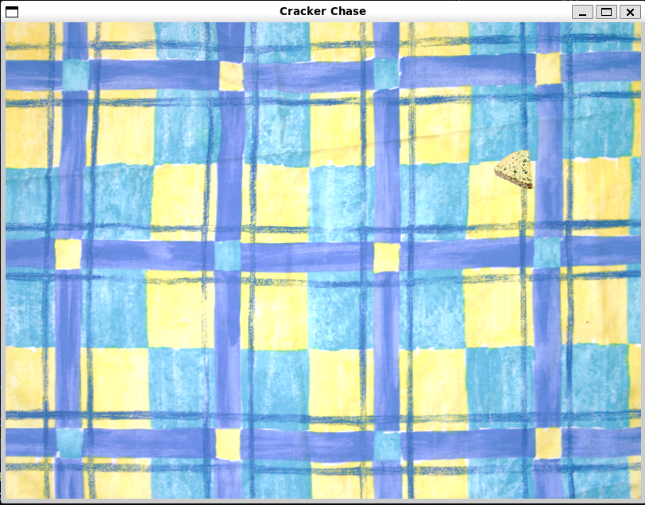
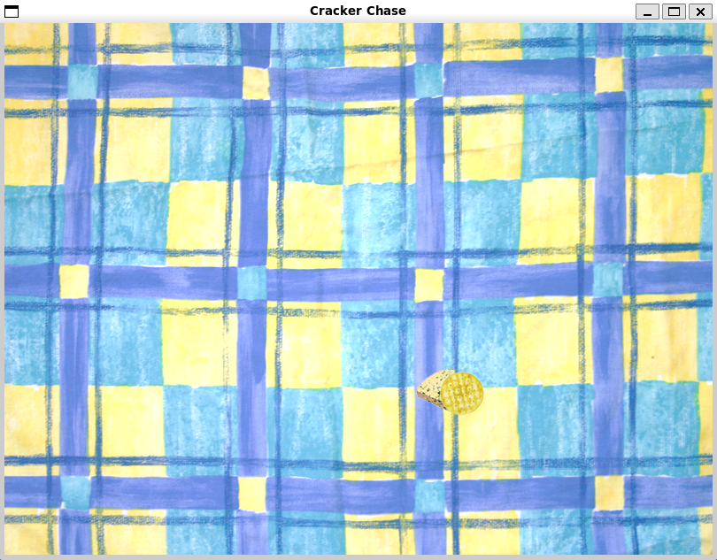
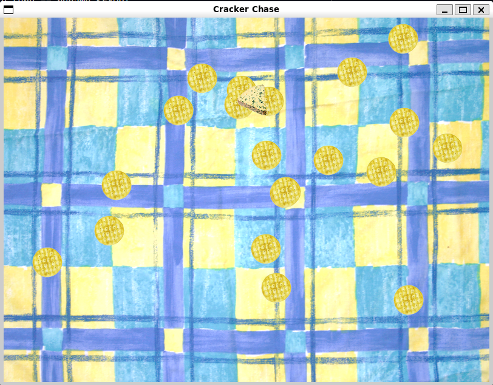

<rect(0, 0, 501, 301)>Chapter 16: Create Games with PyGame
Notes
Getting Started with PyGame
- PyGame is a module for creating games
- This means that it includes support for graphics, sound, shapes etc.
- We’ve already seen this, pygame powered the snaps module
- pygame uses tuples to create items that contain colours and coordinates
- Make sure you’re familiar with tuples (see Chapter 8)
Make Something Happen: Start PyGame and Draw Some Lines
The best way to learn is to dive right in. Open up the python interpreter and work through the following steps
load
pygameThis is done through the usual import
import pygameWe can now use pygame’s functions and classes
Initialise pygame
The pygame framework needs to be initialised
This handles setting everything up
do so as follows
pygame.init()This sets up the pygame elements for handling various tasks
This includes,
- Reading user input
- Making sounds
- and more…
initreturns a tuple indicating how many elements have initialised and how many have failedIf an element fails to initialise it can indicate that pygame hasn’t installed correctly
- The first element of the tuple is the number of successfully initialised elements
- The second element of the tuple is the number of failed elements
Create a drawing surface
To draw objects we first need to define a drawing surface
Drawing surface has a fixed size
- Set at the time of creation
- Size is specified in pixels
- More pixels give a better quality display
size = (800, 600)We can then use this size tuple to create our display
surface = pygame.display.set_mode(size)This creates a drawing surface, references it with the variable
surfaceThe result is then displayed
Set the title
Like with
tkinterthese windows have methods for changing how they displayWe can change the title
Do so as follows,
pygame.display.set_caption("An awesome game")
Draw something on the canvas
Now we can draw on the canvas
For example we can draw a line
This takes four arguments
- The surface to draw on
- The drawing colour
- The start position of the line
- The end position of the line
We already have our surface
Next define a colour
- This is a 3-tuple containing red, green, blue values from \(0\) to \(255\)
- The lowest level is \(0\)
- The highest level is \(255\)
red = (255, 0, 0)
- This is a 3-tuple containing red, green, blue values from \(0\) to \(255\)
Now we need to define the start and end coordinates
Like with tkinter
- \(x\) coordinate measures from the left of the screen to the right
- \(y\) coordinate measures from the top of the screen to the bottom
We then represent a coordinate with a tuple
(x, y)Define our coordinates as below
start = (0,0) end = (500, 300)Now we just have to issue our actual drawing command
pygame.draw.line(surface, red, start, end)This returns a rectangle object enclosing the line
You can ignore this
Render the line
Looking at the window we can see that no line has appeared
Draw operations end up on the back buffer
- Managed by pygame
We don’t draw directly on the screen for every draw command
- In the context of a video game we don’t want to do every draw immediately
- This is quite slow
- We also might want to only show the final result rather than the immediate states
Instead all operations are drawn to the back buffer
- When drawing is done this copy can be drawn over the display memory to replace it
- The memory then used to display becomes the new back buffer
- We then repeat
The
flipfunction is used to swap the display and back buffer memoryCall it now
pygame.display.flip()
Change the background
Currently the background is black
We can use the
fillfunction to change the background colourThe below creates a tuple with the colour white, paints the background, then applies this
white = (255, 255, 255) surface.fill(white) pygame.display.flip()You’ll notice this has erased the red line
- We can use these functions to create some images
- We’ll create a function to draw \(100\) randomly coloured and positioned lines and dots
"""
Example 16.2 Pygame Drawing Functions
Demonstrates the use of pygame's drawing functionality to create
some artwork
"""
import random
import pygame
class DrawDemo:
"""
Draws an image of randomly coloured and positioned lines and dots
"""
@staticmethod
def do_draw_demo():
"""
Create a demonstration display
"""
init_result = pygame.init()
if init_result[1] != 0:
print("Failed to initialise all elements, check pygame installation")
width = 800
height = 600
size = (width, height)
def get_random_coordinates():
"""
Generates a random (X,Y) coordinate tuple
Returns
-------
tuple[int, int]
X,Y coordinates
"""
X = random.randint(0, width - 1)
Y = random.randint(0, height - 1)
return (X, Y)
def get_random_colour():
"""
Generate a random (R,G,B) colour tuple
Returns
-------
tuple[int, int, int]
R,G,B colour tuple
"""
red = random.randint(0, 255)
green = random.randint(0, 255)
blue = random.randint(0, 255)
return (red, green, blue)
surface = pygame.display.set_mode(size)
pygame.display.set_caption("Drawing Example")
red = (255, 0, 0) # noqa: F841
green = (0, 255, 0) # noqa: F841
blue = (0, 0, 255) # noqa: F841
black = (0, 0, 0) # noqa: F841
yellow = (255, 255, 0) # noqa: F841
magenta = (255, 0, 255) # noqa: F841
cyan = (0, 255, 255) # noqa: F841
white = (255, 255, 255)
gray = (128, 128, 128) # noqa: F841
surface.fill(white)
for count in range(100):
start = get_random_coordinates()
stop = get_random_coordinates()
colour = get_random_colour()
pygame.draw.line(surface, colour, start, stop)
for count in range(100):
pos = get_random_coordinates()
colour = get_random_colour()
radius = random.randint(5, 50)
pygame.draw.circle(surface, colour, pos, radius)
pygame.display.flip()
DrawDemo.do_draw_demo()The output should look similar (but slightly different) to the below

Image generated using pygame As a personal aside, since we’re implemented
do_draw_demoas a static method there isn’t really a need for there to be a class hereWe could really just write
do_draw_demoas a standalone function
Make Something Happen: Making Art
Create a program that varies a displayed pattern. Use the time of day and the weather to adjust the colours. Use bright primary colours in the morning and more mellow dark colours in the evening. If the weather is warm, the colours could have a red tinge, and if it’s colder, you could create colours with more blues. Remember that you can create any colour you like for you graphics by modifying the amount of red, green and blue
This one is quite a fun little program. We’ll use the core implementation from the previous example. The basic idea is to wrap the drawing code in a loop that will periodically redraw the image. The second step is to add code that will adjust the weighting of the generated colour in response to the time of day and the current weather.
Lets plan out how we generate out colours first. Before we generated a colour by randomly generating red, green, blue colour values from \(0\) to \(255\) using a uniform distribution. This means that each colour value is equally likely. We could tune the uniform distribution, e.g. by limiting it to a subrange of a colour value, then shifting this up and down the spectrum, but we’ll instead use another distribution, the gaussian. A guassian distribution also called the normal distribution, lets us define a mean point, then the standard deviation (or spread) for our colour value. We can then clip the values to ensure they remain in the \(0\) to \(255\) range. The advantage of this is that we can then easily shift the mean to weight towards specific colours, but we still have a chance of generating any possible colour.
The code implementing this is given below
def get_random_colour(means):
"""
Generate a random (R,G,B) colour tuple
Parameters
----------
means : tuple[int, int, int]
Tuple containing the mean values in RGB space for the generated
colours
Returns
-------
tuple[int, int, int]
R,G,B colour tuple
"""
def random_single_colour_channel(mean, sigma):
"""
Generate a random single colour value from 0 to 255
Number is generated using a clipped gaussian
Parameters
----------
mean : int | float
mean generated colour value
sigma : int | float
standard deviation in generated colour
Returns
-------
int
colour channel value between 0 and 255 inclusive
"""
return int(max(0, min(255, random.gauss(mean, sigma))))
sigma = 20
red = random_single_colour_channel(means[0], sigma)
green = random_single_colour_channel(means[1], sigma)
blue = random_single_colour_channel(means[2], sigma)
return (red, green, blue)We set our standard deviation to \(20\)
- This was chosen through trial and error, to give a decent spread of colours
random_single_colour_channeltakes a mean and sigma (standard deviation), then generates a colour value using a Gaussian distribution- We then clip the value to the range \(0\) to \(255\)
get_random_colourwraps the above function- It defines the standard deviation
- Then generates colour values for red, green and blue
- It accepts a tuple of means corresponding to the mean red, green and blue component
- This lets us shift the mean amount of each individual colour individually
We then want to add code to shift these means based on the temperature and time of day
For temperature, we want to increase the amount of red when it is hot, and increase the amount of blue when it is cold
We first need to get the temperature data, which we do by using the Weather Data program from Chapter 14 as a module
We then want to convert the temperature to celsius (because I intuitively understand those values)
We then use a basic formula for shifting the mean, we use the formula,
\[ \left(R, G, B\right) = \text{scale} \times \left(\text{temperature} - \text{offset}\right) \]
The idea is we define a hot threshold, and then increase the red the more the temperature is above this threshold
We then scale this by a scale factor to ensure the appropriate impact on the mean
We define a similar setup for a cold threshold to increase the blue
We want to return the final result as a tuple of R,G,B shift, because this will be easier to work with and means we don’t need to denote which colour value we are adjusted
def fahrenheit_to_celsius(temperature): """ Convert fahrenheit to celsius Parameters ---------- temperature : int | float the temperature in fahrenheit Returns ------- int | float temperature in celsius """ return (temperature - 32.0) * (5 / 9) def convert_temperature_to_colour_shift(temperature): """ Convert the given temperature into an RGB colour shift Low temperatures give a blue shift, high temperatures give a red shift Parameters ---------- temperature : int | float the current temperature Returns ------- tuple[int, int, int] tuple giving the colour shift in RGB """ scale_factor = 10 # if hot increase the amount of red (more heat = more red) if temperature > 25: return (scale_factor * (int(temperature) - 25), 0, 0) # if cold increase the amount of blue (lower temp = more blue) elif temperature < 10: return (0, 0, -scale_factor * (temperature - 10)) # i.e. 10 -> 0, -10 -> 20 else: return (0, 0, 0)We then want to use the same idea for the time. However in this case we want higher saturation colours early in the morning, and low saturation colours late in the day
- A high saturation colour has high values across \((R,G,B)\)
- A low saturation colour has low values across \((R,G,B)\)
- So we want to adjust the mean across all three colours
def convert_hour_to_colour_shift(hour): """ Convert the given time into an RGB colour shift Night times give a shift towards smaller RGB values, morning times give a shift towards larger RGB values Parameters ---------- hour : int the current hour Returns ------- tuple[int, int, int] RGB colour tuple giving the colour shift in RGB space """ scale_factor = 20 offset = 12 if 6 <= hour <= 12: # want morning to increase the average shift = scale_factor * (offset - hour) # shift range: (0 - 120) elif 18 <= hour or hour < 6: # want evening to decrease the range shift = -(scale_factor * abs(offset - hour)) # shift range (0 - 120) else: shift = 0 return (shift, shift, shift)We use the same kind of formula as before, however this time we shift the mean for all three colours
We have two cases
- Morning, in which case we can use the simple formula before (We define morning as between \(6\) and \(12\))
- Evening, here we want to get more mellow as we get close to midnight, then progressively less mellow
- So we can use the same idea as before but we want to use
absor absolute value to effectively measure the distance of the current hour to midnight
The drawing code is then given as
def draw_art(surface, width, height, hour, temperature): """ Draw an artwork with time and temperature dependent colouring Parameters ---------- surface : surface pygame surface to draw on width : int width of the image in pixels height : int height of the image in pixels hour : int The current hour temperature : int | float The current temperature """ def get_random_coordinates(): """ Generates a random (X,Y) coordinate tuple Returns ------- tuple[int, int] X,Y coordinates """ X = random.randint(0, width - 1) Y = random.randint(0, height - 1) return (X, Y) def get_random_colour(means): """ Generate a random (R,G,B) colour tuple Parameters ---------- means : tuple[int, int, int] Tuple containing the mean values in RGB space for the generated colours Returns ------- tuple[int, int, int] R,G,B colour tuple """ def random_single_colour_channel(mean, sigma): """ Generate a random single colour value from 0 to 255 Number is generated using a clipped gaussian Parameters ---------- mean : int | float mean generated colour value sigma : int | float standard deviation in generated colour Returns ------- int colour channel value between 0 and 255 inclusive """ return int(max(0, min(255, random.gauss(mean, sigma)))) sigma = 20 red = random_single_colour_channel(means[0], sigma) green = random_single_colour_channel(means[1], sigma) blue = random_single_colour_channel(means[2], sigma) return (red, green, blue) white = (255, 255, 255) surface.fill(white) mean = 128 means = (mean, mean, mean) hour_shift = convert_hour_to_colour_shift(hour) temperature_shift = convert_temperature_to_colour_shift(temperature) new_means = [] for i in range(len(means)): new_means.append(means[i] + hour_shift[i] + temperature_shift[i]) means = tuple(new_means) for count in range(100): start = get_random_coordinates() stop = get_random_coordinates() colour = get_random_colour(means) pygame.draw.line(surface, colour, start, stop) for count in range(100): pos = get_random_coordinates() colour = get_random_colour(means) radius = random.randint(5, 50) pygame.draw.circle(surface, colour, pos, radius) pygame.display.flip() def update_artwork_mainloop(): """ Create an art work that updates hourly """ init_result = pygame.init() if init_result[1] != 0: print("Failed to initialise all elements, check pygame installation") width = 800 height = 600 size = (width, height) surface = pygame.display.set_mode(size) pygame.display.set_caption("Drawing Example") while True: hour = time.localtime().tm_hour latitude = 47.61 longitude = -122.33 _, _, temperature, _ = WeatherData.get_weather_temp( latitude=latitude, longitude=longitude ) temperature = fahrenheit_to_celsius(temperature) print( "Updating artwork, it is {0} and the temperature is {1}C".format( hour, temperature ) ) draw_art(surface, width, height, hour, temperature) time.sleep(60 * 30) # update every 30 minutes update_artwork_mainloop()This program will redraw the artwork every half an hour
When it does it pulls the current time and temperature (We’re sticking with Seattle here)
Then redraws the image
Two example images are shown below, the first later at night, the second earlier in a cold morning


Draw Images using Pygame
- Pygame can draw images on the screen
- Images are loaded from files
Image File Types
There are many different image formats
For pygame you should use one of the following
- PNG
- This format is lossless
- An exact version of the image is always stored
- PNG can also have transparent sections
- Allows images to be drawn on top of each other
- JPEG
- This format is lossy
- The program stores a compressed version of the image
- Smaller, but less precise
- PNG
You should use JPEG for large background images and PNG for items drawn over the top
Tip
You can use an image manipulation program to convert image file types
Most image programs will let you load a png or jpeg and export it as a different format. Some common examples include paint (bundled with Windows), paint.net (a free download) or GIMP (a free heavy duty image manipulation program similar to photoshop)
Load an Image into a Game
The pygame
imagemodule handles displayed imagesImages are loaded by providing the file path using the
loadfunction- The path can be relative to the directly that the program is running from
For example below loads an image and assigns it to a variable
cheeseImage = pygame.image.load("cheese.png")Loading an image is separate to actually drawing the image
Drawing is the process of actually copying the image into the display memory
blitis the method that performs this actionblitrequires- The image to be drawn
- The coordinates on the screen where the image is to be blitted
To put
cheeseImageat the top left corner we can write,cheesePos = (0, 0) surface.blit(cheeseImage, cheesePos)This assume
surfaceis the display window as discussed in the previous sectionThe complete program can be seen below
""" Example 16.3 Draw Image Demonstrates drawing an image with pygame """ import time import pygame def do_image_demo(): """ Demonstrate loading and drawing an image using pygame Returns ------- None """ init_result = pygame.init() if init_result[1] != 0: print( "pygame failed to load {0} elements. Please verify installation".format( init_result[1] ) ) width = 800 height = 600 size = (width, height) surface = pygame.display.set_mode(size) pygame.display.set_caption("Image Example") white = (255, 255, 255) surface.fill(white) cheeseImage = pygame.image.load("cheese.png") cheesePos = (0, 0) surface.blit(cheeseImage, cheesePos) pygame.display.flip() if __name__ == "__main__": do_image_demo() time.sleep(10)The screen should look like below

The cheese image loaded onto a white background
Make an Image Move
blitdraws an imageIf we want to make an image move we can repeatedly call
blitSee the example below, you should see the image move from the top left corner towards the botttom right
""" Example 16.4 Moving Image Demonstrates using `blit` to make an image move in pygame """ import time import pygame def show_moving_image(): """ Demonstrate a moving image in pygame Returns ------- None """ init_result = pygame.init() if init_result[1] != 0: print( "Failed to initialise {0} elements, verify pygame installation".format( init_result[1] ) ) def setup_pygame_window(caption): """ Setup a pygame window with the specified caption Parameters ---------- caption : str caption for the window Returns ------- Surface the window """ width = 800 height = 600 size = (width, height) surface = pygame.display.set_mode(size) pygame.display.set_caption(caption) return surface surface = setup_pygame_window("Moving Image Example") cheeseImage = pygame.image.load("cheese.png") cheeseX = 40 cheeseY = 60 clock = pygame.time.Clock() for i in range(1, 100): clock.tick(30) # pause the game to 30 frames per second surface.fill((255, 255, 255)) cheeseX = cheeseX + 1 cheeseY = cheeseY + 1 cheesePos = (cheeseX, cheeseY) surface.blit(cheeseImage, cheesePos) pygame.display.flip() if __name__ == "__main__": show_moving_image() time.sleep(10)
Make Something Happen: Move an Image
Lets work through the previous example in some detail to understand some of the intricacies around handling a moving image. When you run the program you should see the cheese image move diagonally down the screen. The speed is controlled by the frame rate. The frame rate is the rate at which the screen is updated or redrawn. Pygame provides the Clock class which contains the tick method. This can be passed the target frame rate. We start by creating a clock before moving the sprite
clock = pygame.time.Clock()Clock contains other methods for controlling how time progresses. We’ll stick with using tick for now, which makes the game run at a constant speed. By default the program will try to update as fast as python can execute
clock.tick(30)tick pauses the game until the next “slot”. Effectively the next frame. If you updated the argument from \(30\) to \(60\) the program will now target \(60\) frames per second and should run twice as fast. If you instead changed the argument to \(5\) the program will run much slower. Typically games target frame rates between \(30\) and \(60\).
Get User Input from Pygame
- We’ve seen how to display and update images on a screen
- Now we need to add interactivity
- Much like tkinter, pygame updates in response to events
- An event is a user action
- Like pushing a button
- Clicking the mouse etc
- An event is a user action
- In tkinter, we saw that we bound events to components
- Pygame instead uses a queue
- The queue is polled regularly for events to respond to
Make Something Happen: Investigate Events in Pygame
Work through the basics of events in pygame by opening an interpreter and following the steps below
Create a pygame window
This should be straightforward by now
```python import pygame pygame.init() size = (800, 600) surface = pygame.display.set_mode(size)
Capture events in pygame
Clicking the mouse and pressing keys will generate events
First step to responding to events is to capture them
Execute the following,
for e in pygame.event.get(): print(e)This should print out the events you issued previously
getmethod returns a collection of eventsThe loop then lets us iterate over the events in the collection
Some sample is displayed below
#| echo: false print("<Event(768-KeyDown {'unicode': 'h', 'key': 104, 'mod': 4096, 'scancode': 11, 'window': None})") print("<Event(771-TextInput {'text': 'i', 'window': None})>") print("<Event(769-KeyUp {'unicode': 'i', 'key': 105, 'mod': 4096, 'scancode': 12, 'window': None})>") print("<Event(1024-MouseMotion {'pos': (440, 253), 'rel': (-7, 4), 'buttons': (0, 0, 0), 'touch': False, 'window': None})>") print("<Event(1024-MouseMotion {'pos': (425, 263), 'rel': (-15, 10), 'buttons': (0, 0, 0), 'touch': False, 'window': None})>")Each event is described by a dictionary holding information about the event
Above we can see a mix of mouse moves combined with key presses and text input
We need to periodically check the event queue for events
If these events should cause some state update then we have to respond to them
For example, we might want our moving image to be controlled by the arrow keys
Below shows an example and has the added functionality that pressing ESC closes the game
def show_moving_image(): """ Demonstrate a moving image in pygame Returns ------- None """ surface = setup_pygame_window("Controllable Image") image = pygame.image.load("cheese.png") cheeseX = 40 cheeseY = 60 cheeseSpeed = 2 cheeseMovingUp = False cheeseMovingDown = False clock = pygame.time.Clock() while True: clock.tick(60) for e in pygame.event.get(): if e.type == pygame.KEYDOWN: if e.key == pygame.K_ESCAPE: pygame.quit() return if e.key == pygame.K_UP: cheeseMovingUp = True elif e.key == pygame.K_DOWN: cheeseMovingDown = True elif e.type == pygame.KEYUP: if e.key == pygame.K_UP: cheeseMovingUp = False elif e.key == pygame.K_DOWN: cheeseMovingDown = False if cheeseMovingDown: cheeseY = cheeseY + cheeseSpeed if cheeseMovingUp: cheeseY = cheeseY - cheeseSpeed cheesePos = (cheeseX, cheeseY) surface.fill((255, 255, 255)) surface.blit(image, cheesePos) pygame.display.flip()See the full example for all the rest of the setup
Code Analysis: Game Loops
The above provides a very basic example of whats called a game loop. Consider the following questions
What is the variable
eused for in the program?econtains the current event being examined- We only care about events corresponding to key presses (
KEYDOWN) and releases (KEYUP) - When a key is pressed, we
- Check if an arrow key is pressed
- If it’s an up arrow, we set the flag to indicate that we should move up
- If it’s a down arrow we set the flag to indicate tthat we should move down
- We then have a matching pair that resets the flag when the corresponding key is released
Why does the cheese move when a key is held down?
- Statements are updated every \(60\) times
- If a key is down, then the cheese moves every iteration of the loop
How do you change the speed of the image?
- This is stored in the variable
cheeseSpeed - We just have to change the value of this variable
- We could make this a more complicated function, for example adding acceleration
- This is stored in the variable
Why do we increase the value of y to move the cheese down the screen?
- This is because the y coordinates on a pixel display increase as we go down the screen
What would happen if the player pressed both the up and down arrows at the same time?
- Cheese would move both up and down
- Net result would be that the cheese doesn’t move at all
What would happen if the player moved the cheese right off the screen?
- The program disappears off the screen and is no longer visible
- Nothing in the code restricts it to the visible screen
What does the
pygame.quit()method do?- It closes pygame and causes the window to be closed
- Makes sure that all the proper clean up is carried out
Create Game Sprites
- Our game will display three sprites
- Cheese
- Steered by the player around the screen
- Crackers
- The goal, a player tries to catch the crackers
- Tomatoes
- Enemies, the tomato will chase the cheese
- Cheese
- Screen objects are typically called sprites
- A sprite is an image part of the game display
- We can encapsulate the basic behaviour of all our sprites in a base class
Sprite - A
Spritewill have- The image to draw
- A position on the screen,
- a set of behaviours
- Draw itself on the screen
- Update itself
- E.g.
Cheesewill move in response to player input Tomatochases the player
- E.g.
- Reset itself
- When starting the game, we have to reset the sprites
class Sprite: """ Base class for a game Sprite Attributes ---------- image : surface The sprite image game : """ def __init__(self, image, game): """ Create a new `Sprite` Parameters ---------- image : pygame.Surface image to draw game : """ self.image = image self.position = (0, 0) #list so it's mutable self.game = game self.reset() def update(self): """ Update the sprite Called in the game loop to update the status of the sprite. Does nothing in the superclass """ pass def draw(self): """ Draw the sprite on the screen The sprite is drawn at it's current position """ self.game.surface.blit(self.image, self.position) def reset(self): """ Reset the sprite Called at the start of the game """ pass
Code Analysis: Sprite Superclass
Work through the following questions to understand how the Sprite campaign works
What is the
gameparameter used for in the initializer?- New sprites have no knowledge of which game they belong to
- But they need to know this so they can use game information
- e.g. if the cheese captures a cracker, score is updated, and the sprites might change
- This tightly couples the
Spriteclass and theGameclass- Changes in the game may flow through to our sprite representations
- Generally want to avoid tight coupling
- Means changes in the game will have to be propagated to the sprite
Why are the
updateandresetmethods empty?Spriteas a base class is a template for subclasses- By default there’s not a need for every sprite to change, e.g. a background
- Subclasses probably want to have very specific
updateandreset
- Subclasses probably want to have very specific
- So in the base class we put the most generic / basic behaviour
- Let more complex subclasses overwrite them
- The advantage is that this gives us a generic interface that we can use to refer to any sprite
How does the
drawmethod work?The
drawmethod asks the sprite to draw itself on screendef draw(self): self.game.surface.blit(self.image, self.position)gamecontains an attributesurface- This is the window to draw on
We use the internally stored
imageandpositionto draw the image
The base
Spriteclass doesn’t do muchCan be used to implement a generic background
Here we’ll use a tablecloth
Can be thought of as a big sprite that covers the entire screen
We just need to add the basic game loop
class CrackerChase: """ CrackerChase game Runs a simple game loop to display a background sprite """ def play_game(self): """ Load the game and start the game loop Returns ------- None """ init_result = pygame.init() if init_result[1] != 0: print("Failed to initialise {0} elements, verify pygame installation".format(init_result)) width = 800 height = 600 self.size = (height, width) self.surface = pygame.display.set_mode(self.size) pygame.display.set_caption("Cracker Chase") self.background_sprite = Sprite(pygame.image.load("background.png"), self) clock = pygame.time.Clock() while True: clock.tick(60) for e in pygame.event.get(): if e.type == pygame.KEYDOWN: if e.key == pygame.K_ESCAPE: pygame.quit() return self.background_sprite.draw() pygame.display.flip()
Code Analysis: Game Class
The above class is the shell of our the final class we’ll use to implement our game. Work through the following questions to make sure you understand how the class works
How does the game pass a reference to itself to the sprite constructor?
selfreferences the object within which a method is runningselfcan be passed around like any other variable, including as a function argumentself.background_sprite = Sprite(image=pygame.image.load("background.png"), game=self)Above creates a new
Spriteinstance, and passes the game’sselfreference so theSpritereferences the current game
Why does the game call the
drawmethod on the sprite to draw it? Can’t the game just draw the image held inside the sprite?- This is a question of responsibility
- Should the sprite draw itself, or should the game draw the sprite?
- Generally making a sprite draw itself gives us more flexibility
- We could make sprites composable
- e.g. letting a sprite draw a smoke sub-sprite behind it
- We could add this logic to smoke sprites
- Making the game track all this composition would get complex fast
- The game needing to only keep track of which sprites are in existence then call the draw method is a much cleaner interface
Does this mean when the game is run the entire screen is redrawn each time, even if nothing is on the screen?
- Yes
- This is how most games work, it is often quicker to just redraw an entire screen then first spend all the time recalculating what has changed
With our two classes, we can then start the game
game = CrackerChase() game.play_game()
The full code is given in Sprite.py
Add a Player Sprite
We’ve already seen the basic idea behind the player sprite with the steerable cheese
The trick here is to implement this into our sprite framework
NoteStructure your code as you go
Before we just had everything in the one file. This was good because we only had the basic sprite and a pretty simple game. Now I’ll separate the sprites out into one file and the game logic into another. This is a good way to develop, we split out the functionality as it gets to the appropriate size.
We’ll create a
Cheeseclass to handle the player sprite classclass Cheese(Sprite): """ Player controlled cheese sprite Steerable cheese sprite controllable by the player """ def reset(self): """ Reset the player sprite Stops the sprite moving and returns it to it's starting position Returns ------- None """ self.movingUp = False self.movingDown = False self.movingLeft = False self.movingRight = False self.position = [(self.game.width - self.image.get_width())/2, (self.game.height - self.image.get_height())/2] self.speed = [5,5] def update(self): """ Update the cheese position Notes ----- Ensures the player is restricted to the play screen Returns ------- None """ if self.movingUp: self.position[1] = self.position[1] - self.speed[1] if self.movingDown: self.position[1] = self.position[1] + self.speed[1] if self.movingLeft: self.position[0] = self.position[0] - self.speed[0] if self.movingRight: self.position[0] = self.position[0] + self.speed[0] # bound movement to the game space if self.position[0] < 0: self.position[0] = 0 if self.position[1] < 0: self.position[1] = 0 if self.position[0] + self.image.get_width() > self.game.width: self.position[0] = self.game.width - self.image.get_width() if self.position[1] + self.image.get_height() > self.game.height: self.position[1] = self.game.height - self.image.get_height() def startMovingUp(self): """ Start the cheese moving up Returns ------- None """ self.movingUp = True def stopMovingUp(self): """ Stop the cheese moving up Returns ------- None """ self.movingUp = False def startMovingDown(self): """ Start the cheese moving down Returns ------- None """ self.movingDown = True def stopMovingDown(self): """ Stop the cheese moving down Returns ------- None """ self.movingDown = False def startMovingLeft(self): """ Start the cheese moving left Returns ------- None """ self.movingLeft = True def stopMovingLeft(self): """ Stop the cheese moving left Returns ------- None """ self.movingLeft = False def startMovingRight(self): """ Start the cheese moving right Returns ------- None """ self.movingRight = True def stopMovingRight(self): """ Stop the cheese moving right Returns ------- None """ self.movingRight = False
Code Analysis: Player Sprite
Our Cheese sprite encapsulates the player functionality. You can find the example code in Sprite.py. Work through the following questions
Why does the
Cheeseclass not have an__init__ordrawmethod?- The
Cheeseclass subclassesSprite - It inherits the
__init__anddrawmethods fromSprite - We don’t need to overwrite those so we can just leave them implicit
- The
What do the
get_widthandget_heightmethods do?- They are provided by the pygame image class
- Let us determine the width and height of an image
- We use it to properly bound the player sprite to the window

Sprite dimensions overlaid on the game window dimensions Program knows the position of the cheese
- Position being the top left corner of the sprite
So we can make sure the cheese is in on the left of the screen by just checking the current position
To check the right, we have to check that the current position plus the image’s width is within the window width
if self.position[0] + self.image.get_width() > self.game.width: self.position[0] = self.game.width - self.image.get_width()Identical logic follows for the \(y\) axis
We store the position in a list so that we can mutate the position
- Rather than a tuple as we’ve used for positions before
- This is because a tuple is immutable
Restricting a sprite to the screen is also called clamping
We also start the cheese at the centre of the screen
self.position[0] = (self.game.width - self.image.get_width()) / 2 self.position[1] = (self.game.height - self.image.get_height()) / 2
Control the Player Sprite
We then have to update the
Gameclass to add the player sprite in""" Example 16.7a Game Contains the main game loop class for our cracker chasing game """ import pygame import Sprite class CrackerChase: """ CrackerChase game Runs a simple game loop to display a background sprite Attributes ---------- size : tuple[int, int] The size of the game screen in pixels surface : pygame.Surface The game window background_sprite : Sprite Sprite representing the background of the game """ def play_game(self): """ Load the game and start the game loop Returns ------- None """ init_result = pygame.init() if init_result[1] != 0: print("Failed to initialise {0} elements, verify pygame installation".format(init_result)) self.width = 800 self.height = 600 self.size = (self.width, self.height) self.surface = pygame.display.set_mode(self.size) pygame.display.set_caption("Cracker Chase") self.background_sprite = Sprite.Sprite(pygame.image.load("Images/background.png"), self) self.player_sprite = Sprite.Cheese(pygame.image.load("Images/cheese.png"), self) clock = pygame.time.Clock() while True: clock.tick(60) for e in pygame.event.get(): if e.type == pygame.KEYDOWN: if e.key == pygame.K_ESCAPE: pygame.quit() return elif e.key == pygame.K_UP: self.player_sprite.startMovingUp() elif e.key == pygame.K_DOWN: self.player_sprite.startMovingDown() elif e.key == pygame.K_LEFT: self.player_sprite.startMovingLeft() elif e.key == pygame.K_RIGHT: self.player_sprite.startMovingRight() elif e.type == pygame.KEYUP: if e.key == pygame.K_UP: self.player_sprite.stopMovingUp() elif e.key == pygame.K_DOWN: self.player_sprite.stopMovingDown() elif e.key == pygame.K_LEFT: self.player_sprite.stopMovingLeft() elif e.key == pygame.K_RIGHT: self.player_sprite.stopMovingRight() self.background_sprite.draw() self.background_sprite.update() self.player_sprite.draw() self.player_sprite.update() pygame.display.flip() if __name__ == "__main__": game = CrackerChase() game.play_game()This allows the player sprite to be controlled with the arrow keys
Running this code (Game.py) will show a screen with the player that can be moved around the screen
- You should be unable to move off the screen

The game with a player sprite now movable over the background
Add a Cracker Sprite
We now need to add targets for the player
This is a new sprite type, Crackers
- The player must try to catch these crackers
When a player captures a cracker their score increases
- The cracker then moves elsewhere
Crackeragain subclassesSpriteThe class itself inherits most of its functionality from
Sprite- Only need to update the
resetmethod
class Cracker(Sprite): """ Cracker sprite representing a target for the player Moves to random place on the screen once captured """ def reset(self): """ Reset the Cracker to a new random position Returns ------- None """ self.position = [ random.randint(0, self.game.width - self.image.get_width()), random.randint(0, self.game.height - self.image.get_height()), ]- Only need to update the
The
resetmethod just randomly places the cracker on the screen- The upper bound is chosen so that the the sprite is always contained in the game window
This is contained in the updated Sprite.py
We then make some minor updates to the Game.py
def play_game: ... self.background_sprite = Sprite.Sprite( pygame.image.load("Images/background.png"), self ) self.player_sprite = Sprite.Cheese(pygame.image.load("Images/cheese.png"), self) self.cracker_sprite = Sprite.Cracker( pygame.image.load("Images/cracker.png"), self ) ... self.background_sprite.draw() self.background_sprite.update() self.player_sprite.draw() self.player_sprite.update() self.cracker_sprite.draw() self.cracker_sprite.update() pygame.display.flip()We effectively just add the cracker sprite then include it in the sprite processing
The screenshot below shows how the game looks when we’ve moved the cheese to the cracker

The cheese disappears under the cracker There’s three things to observe here
- Nothing happens when the cheese reaches the cracker
- We’ll implement that logic later
- The cheese appears under the cracker
- We really want this to be the other way around
- This happens because by default pygame layers images in their draw order
- This means that we need to draw the player last
- The screen seems quite sparse
- We should add more crackers!
- Nothing happens when the cheese reaches the cracker
Add lots of Sprite Instances
At this point individually declaring then calling
drawandupdateon every sprite is getting a bit tediousThe best solution here would be to store the cracker sprites in a collection (inside the
CrackerChasegame class)In fact we can store all the sprites in a list
cracker_image = pygame.image.load("Images/cracker.png") self.sprites = [self.background_sprite] for i in range(20): cracker_sprite = Sprite.Cracker(image=cracker_image, game=self) self.sprites.append(cracker_sprite) self.sprites.append(self.player_sprite)Adding the background sprite first, and the player sprite last ensures that the background is drawn first and the player drawn last when we later update the game state
We can then replace our specific calls to each sprite’s
updateanddrawwith iteration over the collectionfor sprite in self.sprites: sprite.update() for sprite in self.sprites: sprite.draw() pygame.display.flip()We can see the result below
There are now multiple crackers
Crucially, the player’s cheese is now also drawn over the top of crackers

The game with multiple crackers and the correct draw order
Catch the Crackers
Currently nothing happens when we actually land on a cracker
We need to add collision detection
A simple method
- We can bound each sprite by a rectangle
- Check when two rectangles overlap
It’s easier to check that two rectangles don’t intersect
- Fix one rectangle
- Check the other is not above
- Check the other is not below
- check the other is not left
- Check the other is not right
- They must then intersect
def intersects_with(self, target): """ Check if this sprite intersects the target sprite Uses a rectangular bounding box to compare for intersection. This is a simpler calculation but can overestimate intersection for non-rectangular sprites Parameters ---------- target : Sprite sprite to compare for intersection Returns ------- bool `True` if the sprites intersect, else `False` """ max_x = self.position[0] + self.image.get_width() max_y = self.position[1] + self.image.get_height() target_max_x = target.position[0] + target.image.get_width() target_max_y = target.position[1] + target.image.get_height() if max_x < target.position[0]: # To the left of the target sprite return False if max_y < target.position[1]: # Below the target sprite return False if self.position[0] > target_max_x: # To the right of the target sprite return False if self.position[1] > target_max_y: # Above the target sprite return False # Passes all the exclusion principles, so must intersect return True- Fix one rectangle
We write this as a method on the
Spriteclass- Automatically then inherited by all the downstream sprite subclasses
Pass in the sprite we want to check for intersection
Now we can update
Crackerto check if it has been intersected by the playerdef update(self): if self.intersects_with(self.game.player_sprite): self.captured_sound.play() self.reset()
Add Sound
You should notice hidden in the
updatemethod above is a lineself.captured_sound.play()This plays a sound when the cracker is captured
pygame provides a
Soundclass- Manages sound playback
Loading a sound works much like loading an image
We provide a path to the sound file we want to load
cracker_eat_sound = pygame.mixer.Sound("burp.wav")We need to update the
Crackerconstructor to take in a reference to this sound filedef __init__(self, image, game, captured_sound): super().__init__(image, game) self.captured_sound = captured_soundThe new call should look like,
cracker_sprite = Cracker(image=cracker_image, game=self, captured_sound=cracker_eat_sound)The relevant updates can be found in Example 10, under Sprite.py and Game.py respectively
Caution
What Could go Wrong: Bad Collision Detection
- The problem with bounding boxes is that they are always strictly larger than the sprite
- If the sprite is close to rectangular this isn’t much of a problem
- But if the sprite doesn’t fit the bounding box very well then the effect probably doesn’t look great
- This could potentially annoy the player if it looks like they’re being unfairly penalised
- There techniques to work around this
- Do a first pass with a bounding box
- This eliminates obvious non-intersections
- Then for intersection candidates more intricately check if any pixels overlap
- Use distance rather than a bounding box
- Works well for circular sprites
- Make the sprites as close to rectangular as possible
- Do a first pass with a bounding box
Tip
When you write a game, you control the universe
When making a game, unlike when making a product, you typically have a lot more freedom to design the product according to what you want it to do. Feel free to play around and experiment to find out what makes the gameplay fun to you.
Add a Killer Tomato
- We’ve set up the game and the player’s objective
- Now we need to add the challenge
- The third sprite to add is the Killer Tomato
- This enemy will try and get to the player
- We’ll slowly increase the number of Tomatoes until the player is overwhelmed
Add Artificial Intelligence to a Sprite
- The A.I for our killer tomato is very basic
- It simply looks at it’s position relative to the player
- Calculates the vector to the player
- Then follows this vector
# calculate x-axis velocity component if game.player_sprite.position[0] > self.position[0]: self.x_speed = self.x_speed + self.x_accel else: self.x_speed = self.x_speed - self.x_accel # calculate the y-axis velocity component if game.player_sprite.position[1] > self.position[1]: self.y_speed = self.y_speed + self.y_accel else: self.y_speed = self.y_speed - self.y_accel - Observe that we don’t have a fixed speed for the tomato
- It accelerates towards the player
- This means it will get faster over time (in a straight line)
- To turn around it needs to decelerate first
- The player however has a fixed speed
- So can potentially move around the tomato
Note
Using “artificial Intelligence” makes games much more interesting
The term A.I is used to mean a lot of different technologies. Especially at the time of writing up these notes. The argument about if simple logic like above (or video game A.I more broadly) is “real A.I” is largely a semantic one. Players react to the enemy like it has intelligence, and it makes the game much more compelling when players feel like they’re facing a “real” opponent
Add Physics to a Sprite
Each update our game does two things
- It updates the sprites
- It redraws the screen
The speed of an object is thus the amount it moves each update, in pixels / frame
- Our player cheese moves \(5\) pixels in either direction per update
The game updates at \(60\) frames per second
- This means our player can move \(5 \times 60 = 300\) pixels per second
- It is good to get a good idea of these heuristics so you can correctly estimate the speed value
Acceleration measures how fast the speed is changing
We see this with the tomato, which is initially at rest then accelerates
The tomato, if given enough time will start to move at absurdly high speed
We add friction
Friction reduces the overall speed towards zero
The faster the tomato is, the greater the effect of friction
We can implement it as below
self.x_speed = self.x_speed * self.friction_value
We set the initial conditions as part of the
resetmethoddef reset(self): self.entry_count = 0 self.friction_value = 0.99 self.x_accel = 0.2 self.y_accel = 0.2 self.x_speed = 0 self.y_speed = 0 self.position = [-100, -100]The chosen values for acceleration and friction are chosen by trialling values to get something that feels right
If we calculate the steady point we see that the maximum speed is given by
\[ \begin{align} v_{x} &= f\left(v_{x} + a_{x}\right) \\ \left(1 - f\right)v_{x} &= f a_{x} \\ v_{x} &= \frac{f}{1 - f} a_{x} \end{align} \]
Which for our chosen values, corresponds to \(0.99 / 0.01 \times 0.2 = 19.8\)
- Which is about four times as fast as the player
Tip
When you write a game, you can always cheat
With games, as with any software, it’s good to start with the minimum working implementation of a feature. Often this is easier in games because you get the define what your features actually are. You can then improve it as needed to improve the quality of the game. If the feature isn’t very important then there isn’t really a need to give it a more detailed implementation.
Here the physics are very simplistic, and the friction factor is not very realistic. But the goal here is to provide a good gameplay experience, not an accurate physics simulation. The more important fact is that the it feels real to a player. A more accurate physics model, if anything might actually detract from the gameplay experience
Create Timed Sprites
- It’s important that a game be progressive
- A screen immediately filled with killer tomatoes would be overwhelming and not much fun
- We want to progressively increase the number of killer tomatoes on screen
- We add an
entry_delayparameter- This effectively counts down the time until a sprite is active
- We vary this parameter as we construct the tomatoes in the game
tomato_image = pygame.image.load("tomato.png") for entry_delay in range(300, 3000, 300): tomato_sprite = Tomato(image=tomato_image, game=self, entry_delay=entry_delay) self.sprites.append(tomato_sprite) - This version of
rangeaccepts three argumentsstart- The inclusive starting value
stop- The exclusive finishing value
step- The step between values, i.e. if
startis the first value, the second isstart + step
- The step between values, i.e. if
- We have to update the
Tomatosprite__init__method to accept this new parameter - Every time
updateis called the tomato will count up- Once this counter reaches the
entry_delaythen we can spawn this sprite
def update(self): self.entry_count = self.entry_count + 1 if self.entry_count < self.entry_delay: return - Once this counter reaches the
- Observe that we have to give the values for
entry_countandentry_delayin terms of the number of frames- This converts to seconds as \(\text{seconds} = \text{frames}/60\)